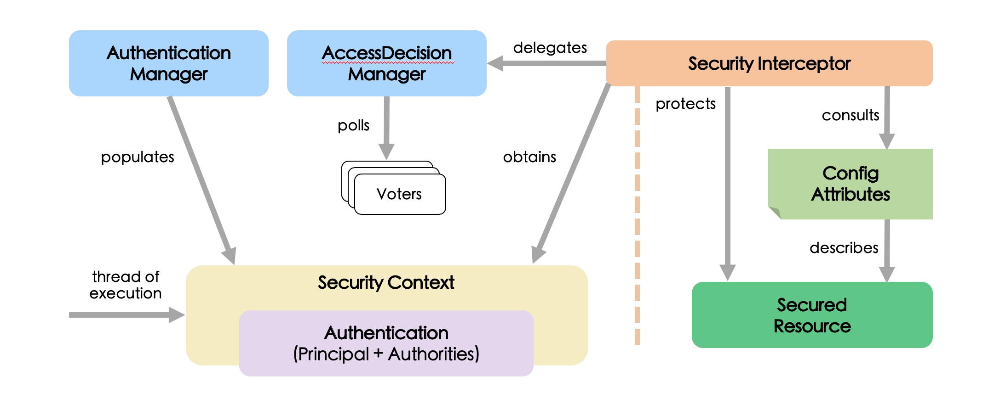
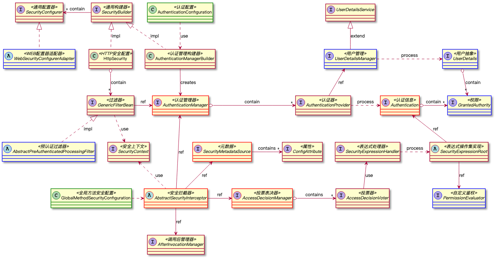
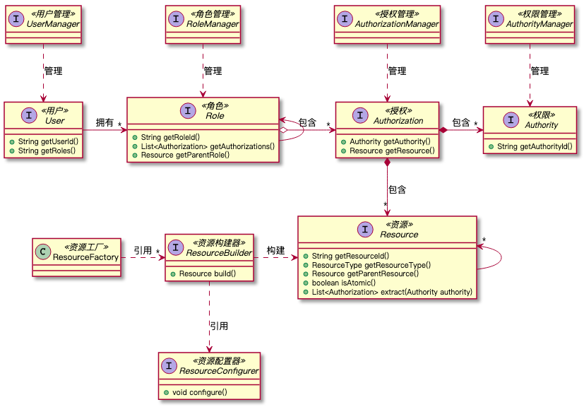
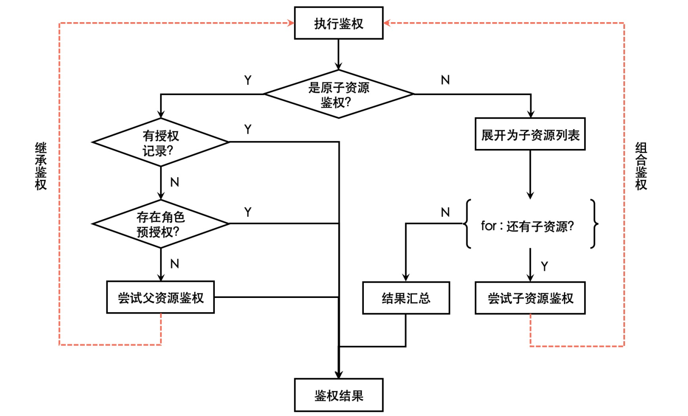

Spring Secutity和Apache Shiro是Java领域的两大主流开源安全框架，也是权限系统设计的主要技术选型。本文主要介绍Spring Secutity的实现原理，并基于Spring Secutity设计基于RBAC的权限系统。
为何把Spring Secutity作为权限系统的技术选型，主要考虑了以下几个方面：
| Spring Security | Apache Shiro | |
|---|---|---|
| 认证 | 支持多种认证方式（如密码、匿名、预认证） | 简单登录认证 |
| 鉴权 | 功能鉴权、数据鉴权 | 功能鉴权 |
| 多源适配 | Mem、JDBC、DAO、LDAP、 OpenID、OAuth等 |
LDAP、JDBC、Kerberos、 ActiveDirectory等 |
| 加密 | 支持多种加密方式 | 简单加密方式 |
| 运行环境 | 依赖Spring | 可独立运行 |
| 开放性 | 开源、Spring生态基础 | 开源 |
| 复杂度 | 复杂、较重 | 简单、灵活 |
权限系统一般包含两大核心模块：认证（Authentication）和鉴权（Authorization）。
官方给出的Spring Security的核心架构图如下：

核心架构解读：
通过对源码的分析，我把Spring Security的核心领域模型设计整理如下：

全局抽象模型解读：
理清Spring Security的定制点后，就可以在系统内部集成Spring Security了。
这里使用预认证的方式，以适配第三方认证系统。AbstractPreAuthenticatedProcessingFilter提供了预认证的扩展点，基于该抽象类实现一个自定义认证过滤器。
public class MyPreAuthFilter extends AbstractPreAuthenticatedProcessingFilter {
@Override
protected Object getPreAuthenticatedPrincipal(HttpServletRequest request) {
// 从第三方系统获取用户ID
return userId;
}
@Override
protected Object getPreAuthenticatedCredentials(HttpServletRequest request) {
return "";
}
}Spring Security会根据预认证过滤器getPreAuthenticatedPrincipal返回的用户ID信息，加载用户角色等初始信息。这里需要实现UserDetailsManager接口，提供用户信息管理器。
@Service
public class MyUserManager implements UserDetailsManager {
@Override
public UserDetails loadUserByUsername(String username) throws UsernameNotFoundException {
// 从数据库加载用户信息
return user;
}
// 其他管理接口
}UserDetails内包含了GrantedAuthority接口类型的权限信息抽象，一般可以基于它自定义角色和权限。Spring Security使用一种接口形式表达角色和权限，角色和权限的差别是角色的ID是以"ROLE_"为前缀。
public class MyRole implements GrantedAuthority {
private final String role;
@Override
public String getAuthority() {
return "ROLE_" + role;
}
}
public class MyAuthority implements GrantedAuthority {
private final String authority;
@Override
public String getAuthority() {
return authority;
}
}接下来注册自定义认证过滤器和用户管理器，这里需要实现WebSecurityConfigurerAdapter进行Web安全配置。
@EnableWebSecurity
@EnableGlobalMethodSecurity(prePostEnabled = true, mode = AdviceMode.PROXY)
public class MySecurityConfig extends WebSecurityConfigurerAdapter {
@Autowired
UserDetailsManager userDetailsManager;
@Bean
protected AuthenticationProvider createPreAuthProvider() {
// 注册用户管理器
PreAuthenticatedAuthenticationProvider provider = new PreAuthenticatedAuthenticationProvider();
provider.setPreAuthenticatedUserDetailsService(new UserDetailsByNameServiceWrapper<>(userDetailsManager));
return provider;
}
@Override
protected void configure(HttpSecurity http) throws Exception {
// 注册预认证过滤器
http.addFilter(new MyPreAuthFilter(authenticationManager()));
}
}这样，最简单的Spring Security框架集成内系统内部已经完成了。在系统的任意服务接口上可以使用如下方式进行鉴权。
public interface MyService {
@PreAuthorize("hasAuthority('QUERY')")
Object getById(String id);
@PreAuthorize("hasRole('ADMIN')")
void deleteById(String id);
}PreAuthorize注解表示调用前鉴权，Spring使用默认使用动态代理技术生成鉴权逻辑。注解内配置了SpringEL表达式来定制鉴权方式。上述代码中，hasAuthority会检查用户是否有QUERY权限，hasRole会检查用户是否有ADMIN角色。
使用动态代理的方式进行AOP，只允许在接口层面进行权限拦截，如果想在任意的方法上进行权限拦截，那么就需要借助于AspectJ的方式进行AOP。首先将注解EnableGlobalMethodSecurity的mode设置为AdviceMode.ASPECTJ，然后添加JVM启动参数，这样就可以在任意方法上使用Spring Security的注解了。
-javaagent:/path/to/org/aspectj/aspectjweaver/1.9.4/aspectjweaver-1.9.4.jar以上还是只是以用户的身份信息（角色/权限）进行权限，灵活度有限，也发挥不了Spring Security的数据鉴权的能力。要使用数据鉴权，需要实现一个Spring Bean。
@Component
public class MyPermissionEvaluator implements PermissionEvaluator {
@Override
public boolean hasPermission(Authentication authentication, Object targetDomainObject, Object permission) {
// 自定义数据鉴权
return false;
}
@Override
public boolean hasPermission(Authentication authentication, Serializable targetId, String targetType, Object permission) {
// 自定义数据鉴权
return false;
}
}PermissionEvaluator会被自动注册到Spring Security框架，并允许在注解内使用如下方式进行鉴权。
@PreAuthorize("hasPermission(#id, 'QUERY')")
Object func1(String id) {
}
@PreAuthorize("hasPermission(#id, 'TABLE', 'QUERY')")
Object func2(String id) {
}其中，func1的注解表示校验用户是否对id有QUERY权限，代码逻辑路由到MyPermissionEvaluator的第一个接口。func2的注解表示校验用户是否对TABLE类型的id有QUERY权限，代码逻辑路由到MyPermissionEvaluator的第二个接口。PermissionEvaluator提供了权限系统中数据鉴权的扩展点，稍后会描述如何利用该扩展点定制基于RBAC的权限系统。
构建基于RBAC（Role Based Access Control）的权限系统，需要明确用户、角色、权限、资源这几个核心的概念类的含义和它们之间的关系。
以下是我们设计的基于RABC的权限核心领域模型：

一般情况下，系统内需要权限管控的资源是无法用户自定义的，因为资源会耦合大量的业务逻辑，所以我们提供了自 资源工厂，通过配置化的方式构建业务模块所需的资源。而用户、角色、权限，以及授权记录都是可以通过相应的管理器进行查询更新。
另外，资源抽象允许表达资源的继承和组合关系，继而表达更复杂的资源模型，资源统一鉴权的流程为：

综上，基于统一资源抽象和资源配置化构建，可以实现资源的统一构建，继而实现统一鉴权。
本文从Spring Security的架构和原理出发，描述了开源安全框架对于认证和鉴权模块的设计思路和细节。并提供了系统内集成Spring Security的方法，结合RBAC通用权限系统模型，讨论了统一资源构建和统一鉴权的设计和实现。如果你也需要设计一个新的权限系统，希望本文对你有所帮助。